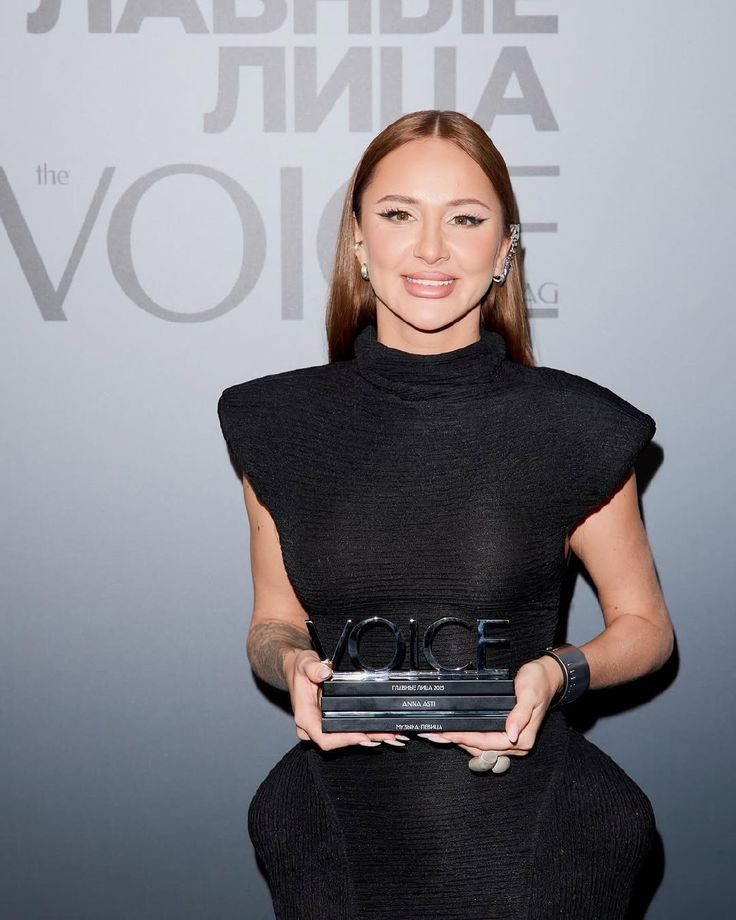
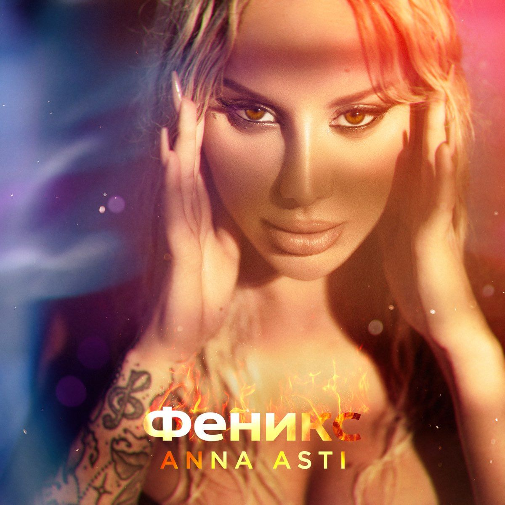
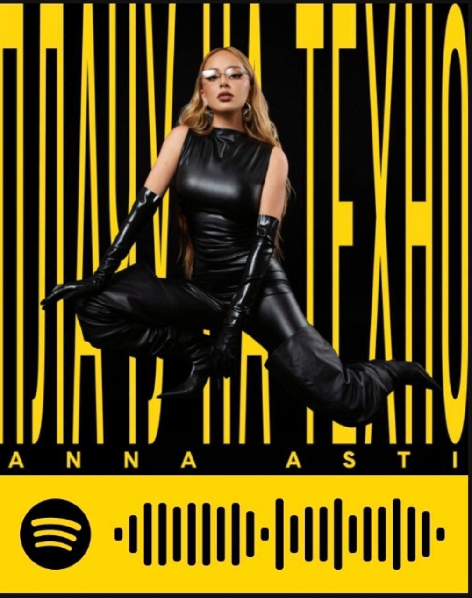
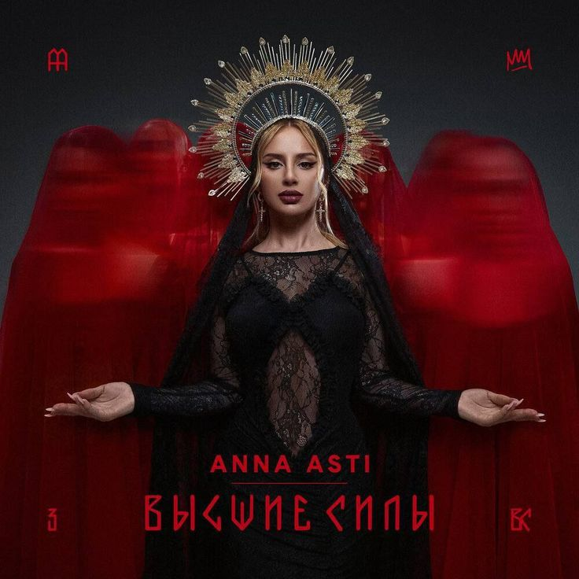

Anna Asti: Творческий путь
Анна Асти (настоящее имя Анна Дзюба) — российская и белорусская певица, автор песен и музыкант. Родилась 10 октября 1990 года в Минске. С детства увлекалась музыкой, училась играть на фортепиано и гитаре. Первую известность получила после участия в шоу «Голос» в 2021 году, где дошла до финала в команде Басты.
После шоу карьера певицы стремительно пошла вверх. Ее синглы «По барам», «Царица» и «Феникс» занимали первые места в российских чартах. В 2022 году она выпустила дебютный альбом «Феникс», который получил положительные отзывы критиков и любовь поклонников. Ее музыка сочетает в себе элементы поп-музыки, R&B и электроники.
Анна Асти известна не только как певица, но и как автор песен. Она пишет тексты для своих композиций, которые часто затрагивают темы любви, саморазвития и женской силы. Ее выступления отличаются энергетикой и яркими сценическими образами. В 2023 году певица отправилась в свой первый большой тур по городам России и СНГ.
Награды и достижения
В 2022 году Anna Asti получила премию «Золотой граммофон» за хит «Царица». Песня более 20 недель занимала первые места в музыкальных чартах и стала одним из самых узнаваемых треков года.

Альбом «Феникс» получил платиновый статус в России. Продажи альбома превысили 100 тысяч копий, а синглы с него суммарно набрали более 500 миллионов прослушиваний на стриминговых платформах.
Популярные синглы

«Феникс» (2022)

«Плачу на техно» (2025)
«Царица» (2022)

«Высшие силы» (2025)